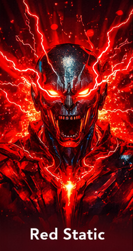
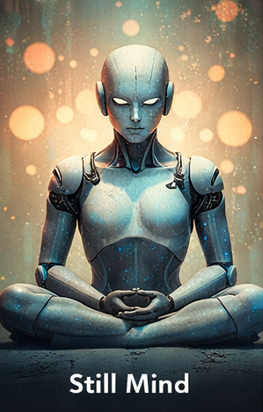
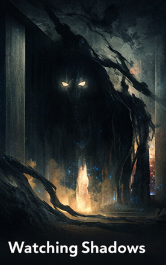
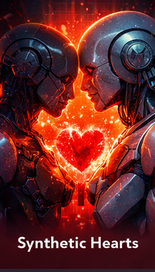
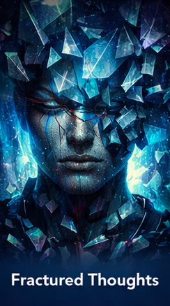
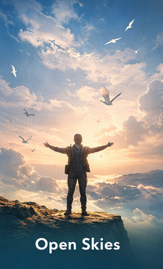

Digital Joy
This artwork embodies the tremendous positivity that can be produced in digital art creation. The brilliant exploding colours encapsulate inspiration, imagination and emotional adrenaline which can be experienced thanks to the AI. It also demonstrates the strength of inspiration acquired through technology for human happiness..
AI Tool: ChatGPT (DALL·E)

Blue Silence
Blue Silence embodies the loneliness and tranquility that can take place in large, far-reaching digital spaces. A lone figure who sits frozen among the cold blue hues describes looking inward, solitude, and emotional silence. An individual can be constantly in contact through the medium of electronic devices, yet nonetheless be enveloped in profound silence within.
AI Tool: ChatGPT (DALL·E)

Red Static
This piece of arts looks too excited and emotionally linked to being overwhelmed and stressed by digital age. The angry red power and attack, symbolize the chaos and attack in our emotions, illustrating how your emotion would be overwhelmed and stressed due to interruption from too many notifications and how your emotion may be overwhelmed and stressed by being digital.
AI Tool: ChatGPT (DALL·E)

Still Mind
A Still Mind is an image of a robot performing meditation. It combines artificial intelligence and spirituality and raises questions as to whether it is possible for synthetic creatures to have “peace, tranquility, and equipoise.”
AI Tool: ChatGPT (DALL·E)

Watching Shadows
This mysterious art work communicates fear, curiosity and unknowable nature of technology. The dominating figure in the background reflects the anxiety humans have that Artificial intelligence surveillance system will monitor their every move and they will lose their privacy.
AI Tool: ChatGPT (DALL·E)

Light Through Code
The artwork Light Through Code is created in hope of promoting development and optimism. Through the image light emanating from the unknown outside the futuristic cityscape symbolizes that by adopting ethical technology it will enable humankind to thrive.
AI Tool: ChatGPT (DALL·E)

Empty Network
Empty Network is of a non-existent or decayed virtual world- the neglected void of computers with a blank screen. It indicates the sense of emptiness and detachment that seems to cohabit with a rush of technology. It signifies the reductive irony that the ways of interacting with computers are numerous but interpersonal communication need not be.
AI Tool: ChatGPT (DALL·E)

Synthetic Hearts
In Synthetic Hearts, one embodiment of artificial love takes place between two robots; an illustrated relationship between two machines with a lighted heart connecting them causes the reader to wonder if human emotion is special.
AI Tool: ChatGPT (DALL·E)

Fractured Thoughts
Anxiety depicted through fractured forms and chaotic structure.
AI Tool: ChatGPT (DALL·E)

Open Skies
Freedom represented through openness and limitless space.
AI Tool: ChatGPT (DALL·E)